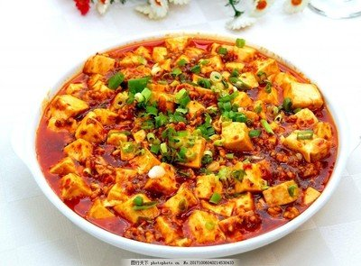

菜品介绍
麻婆豆腐是四川传统名菜之一，具有麻、辣、烫、香、酥、嫩、鲜、活的特点。这道菜主要由豆腐、肉末、辣椒和花椒制成，以其独特的麻辣口味而闻名于世。
麻婆豆腐创始于清朝同治元年（1862年），由成都陈麻婆豆腐店创始人陈氏所创。她制作的豆腐色香味俱全，深受人们喜爱，因此被称为"陈麻婆豆腐"，后来简称为"麻婆豆腐"。
历史背景
麻婆豆腐的历史可以追溯到清朝同治年间（1862-1874年），在成都万福桥边，有一家原名"陈兴盛饭铺"的店面。店主陈春富早逝，小饭店便由老板娘经营，老板娘面上微麻，人称"陈麻婆"。
当年的万福桥是一道横跨府河、常有苦力之人在此歇脚、打尖的桥。这些人经常买点豆腐、牛肉，再从油篓里舀些菜油要求老板娘代为加工。日子一长，陈氏对烹制豆腐有了一套独特的烹饪技巧，烹制的豆腐色香味俱全，不同凡响，深得人们喜爱。她创制的烧豆腐，被称为"陈麻婆豆腐"，其饮食小店后来也以"陈麻婆豆腐店"为名。
制作步骤
1准备食材
将豆腐切成2厘米见方的块，放入沸水中，加入少许盐，焯烫片刻后捞出沥干。牛肉剁成末，蒜苗切碎。
2炒制肉末
锅中放油烧热，下牛肉末炒散，待牛肉末炒干水分、呈金黄色时，下豆瓣酱、豆豉炒香。
3烹制酱料
下辣椒面炒出红油，再加入姜末、蒜末炒香，然后加入适量肉汤或水煮沸。
4烧制豆腐
放入焯好的豆腐，加酱油、料酒烧制入味，用水淀粉勾芡，分2-3次加入，让芡汁紧紧包裹住豆腐。
5出锅装盘
最后撒上花椒面、蒜苗末即可。正宗的麻婆豆腐在出锅后还会再撒上一层花椒面，增加麻辣口感。

食材清单
主料
- 豆腐 400克
- 牛肉末 100克
辅料
- 蒜苗 2根
- 大蒜 3瓣
- 生姜 1小块
调味料
- 郫县豆瓣酱 2汤匙
- 花椒粉 1茶匙
- 辣椒粉 1茶匙
- 豆豉 1汤匙
- 酱油 1汤匙
- 料酒 1汤匙
- 水淀粉 适量
营养信息
* 营养信息为每份估算值，实际数值可能因食材和烹饪方式有所不同